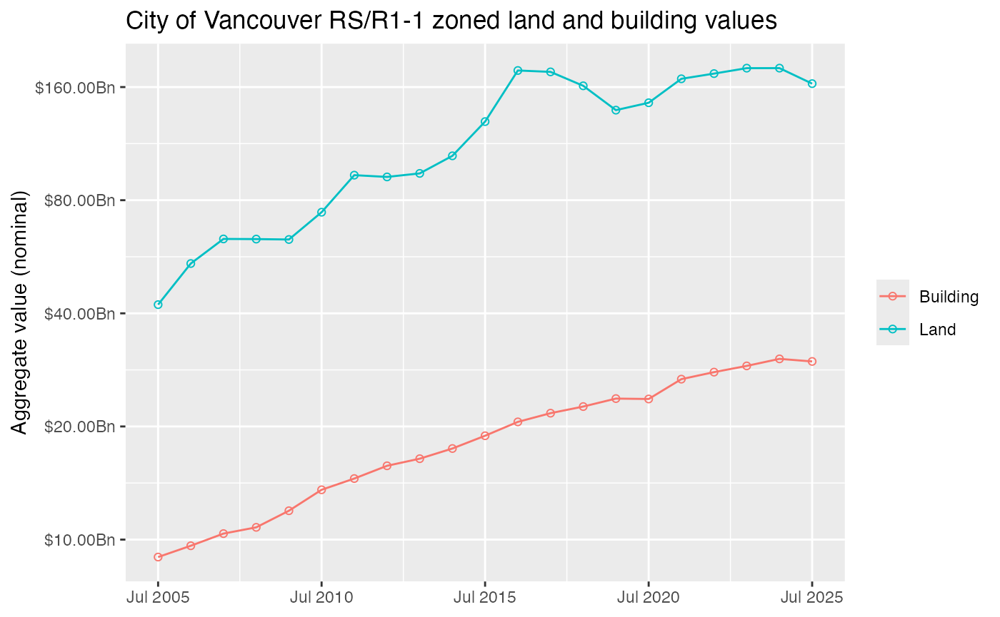
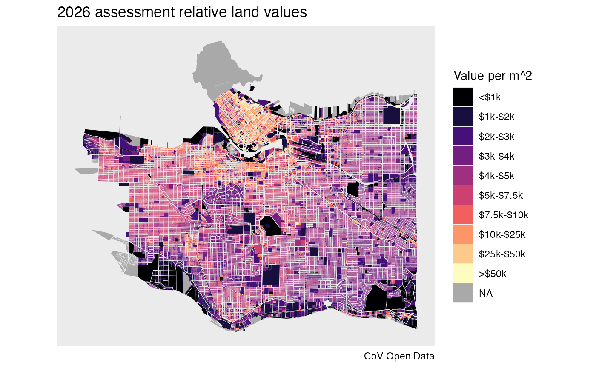

library(VancouvR)
library(dplyr)
#>
#> Attaching package: 'dplyr'
#> The following objects are masked from 'package:stats':
#>
#> filter, lag
#> The following objects are masked from 'package:base':
#>
#> intersect, setdiff, setequal, union
library(tidyr)
library(ggplot2)Get a list of property tax related datasets
search_cov_datasets("property-tax") |>
select(dataset_id,title)
#> # A tibble: 4 × 2
#> dataset_id title
#> <chr> <chr>
#> 1 property-tax-report-2011-2015 Property tax report 2011-2015
#> 2 property-tax-report Property tax report
#> 3 property-tax-report-2006-2010 Property tax report 2006-2010
#> 4 property-tax-report-2016-2019 Property tax report 2016-2019Get metadata for tax report
get_cov_metadata("property-tax-report") |>
tail(10)
#> # A tibble: 10 × 4
#> name type label description
#> <chr> <chr> <chr> <chr>
#> 1 current_improvement_value int CURRENT_IMPROVEMENT_VALUE The market valu…
#> 2 tax_assessment_year text TAX_ASSESSMENT_YEAR Year in effect …
#> 3 previous_land_value int PREVIOUS_LAND_VALUE This value is f…
#> 4 previous_improvement_value int PREVIOUS_IMPROVEMENT_VALUE This value is f…
#> 5 year_built text YEAR_BUILT Year that the p…
#> 6 big_improvement_year text BIG_IMPROVEMENT_YEAR Year of major i…
#> 7 tax_levy double TAX_LEVY This is the tot…
#> 8 neighbourhood_code text NEIGHBOURHOOD_CODE This is a 3-dig…
#> 9 report_year text REPORT_YEAR Year when data …
#> 10 note text NOTE NAGet an overview of land and building values in RS zones
search_cov_datasets("property-tax") |>
pull(dataset_id) |>
lapply(function(ds)
aggregate_cov_data(ds,
group_by="tax_assessment_year as Year",
where="zoning_district like 'RS-' or zoning_district like 'R1-1'",
select="sum(current_land_value) as Land, sum(current_improvement_value) as Building")) |>
bind_rows() |>
# Records with no assessment year come back as their own group; drop them so
# the series is purely by year.
filter(!is.na(Year)) |>
mutate(Date=as.Date(paste0(as.integer(Year)-1,"-07-01"))) |>
pivot_longer(c("Land","Building")) |>
ggplot(aes(x=Date,y=value,color=name,group=name)) +
geom_point(shape=21) +
geom_line() +
scale_x_date(breaks=as.Date(paste0(seq(2005,2050,5),"-07-01")),date_labels="%b %Y") +
scale_y_continuous(labels=function(x)scales::dollar(x, scale=10^-9,suffix="Bn"),
breaks=2^seq(0,10)*5*10^9,trans="log") +
labs(title="City of Vancouver RS/R1-1 zoned land and building values",
x=NULL, color=NULL, y="Aggregate value (nominal)")
#> Downloading data from CoV Open Data portal
#> Downloading data from CoV Open Data portal
#> Downloading data from CoV Open Data portal
#> Downloading data from CoV Open Data portal
Get data for property tax report and property polygons
When metadata indicates that the data has a spatial componenet the
package will automatically return the data in sf
format.
tax_data <- get_cov_data(dataset_id = "property-tax-report",
where="tax_assessment_year='2026'",
select = "current_land_value, land_coordinate as tax_coord")
#> Downloading data from CoV Open Data portal
property_polygons <- get_cov_data(dataset_id="property-parcel-polygons") |>
sf::st_transform(26910)
#> Downloading data from CoV Open Data portalCompute and plot relative land values
plot_data <- property_polygons |>
left_join(tax_data |> group_by(tax_coord) |> summarize(current_land_value=sum(current_land_value)),by="tax_coord") |>
mutate(rlv=current_land_value/as.numeric(sf::st_area(geometry))) |>
mutate(rlvd=cut(rlv,breaks=c(-Inf,1000,2000,3000,4000,5000,7500,10000,25000,50000,Inf),
labels=c("<$1k","$1k-$2k","$2k-$3k","$3k-$4k","$4k-$5k","$5k-$7.5k","$7.5k-$10k",
"$10k-$25k","$25k-$50k",">$50k"),
ordered_result = TRUE))
ggplot(plot_data) +
geom_sf(aes(fill=rlvd),color=NA) +
scale_fill_viridis_d(option="magma",na.value="darkgrey") +
labs(title="2026 assessment relative land values",fill="Value per m^2",caption="CoV Open Data") +
coord_sf(datum=NA)